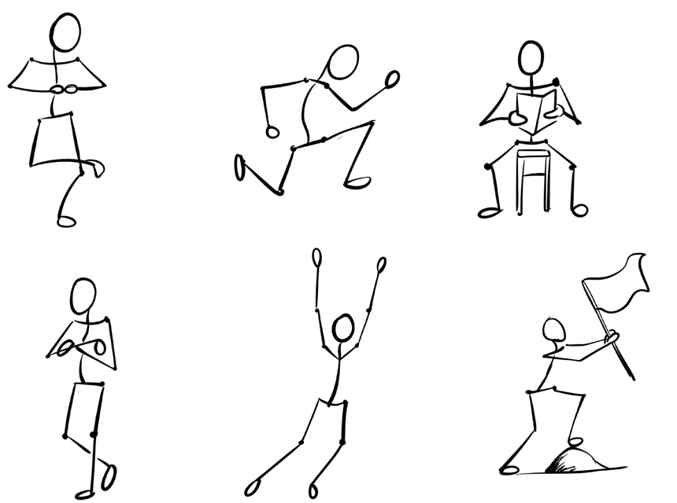

Kazi ya kufanya namba 1
Chunguza kielelezo kifuatacho na kisha uchore picha njiti A hadi F.
Hatua za kuchora picha njiti ya umbo la kitanda
(i)Amua mwelekeo wa kitanda kama ni kulia, kushoto au kuoneshwa kutoka mtazamo wa pembe;
(ii)Chora mistari ya ulalo;
(iii)Chora mistari ya wima ya mbele; na
(iv)Chora mistari ya wima ya nyuma upande wa chini, kama inavyoonekana katika Kielelezo namba 3.